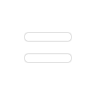

Tippen Sie auf das Bild und dann auf , um das Menü zum Festlegen des Bildausschnitts aufzurufen. Passen Sie die Größe und Perspektive des Start- und Endpunkts des Bildes an. Beim Abspielen wechselt der Clip sanft vom Startausschnitt zum Endausschnitt des Bildes.

Tippen Sie auf den Videoclip und dann auf , um das Menü zum Festlegen des Bildausschnitts aufzurufen. Passen Sie die Größe und Perspektive des Start- und Endpunkts des Clips an. Der Clip wechselt dann sanft vom Startausschnitt zum Endausschnitt des Videos.

Tippen Sie während des Schneidens auf , um die gleiche Start- und Endposition zu wählen. Unabhängig davon, welche Position (Start oder Ende) ausgewählt ist, wird diese auch die andere Position eingestellt.